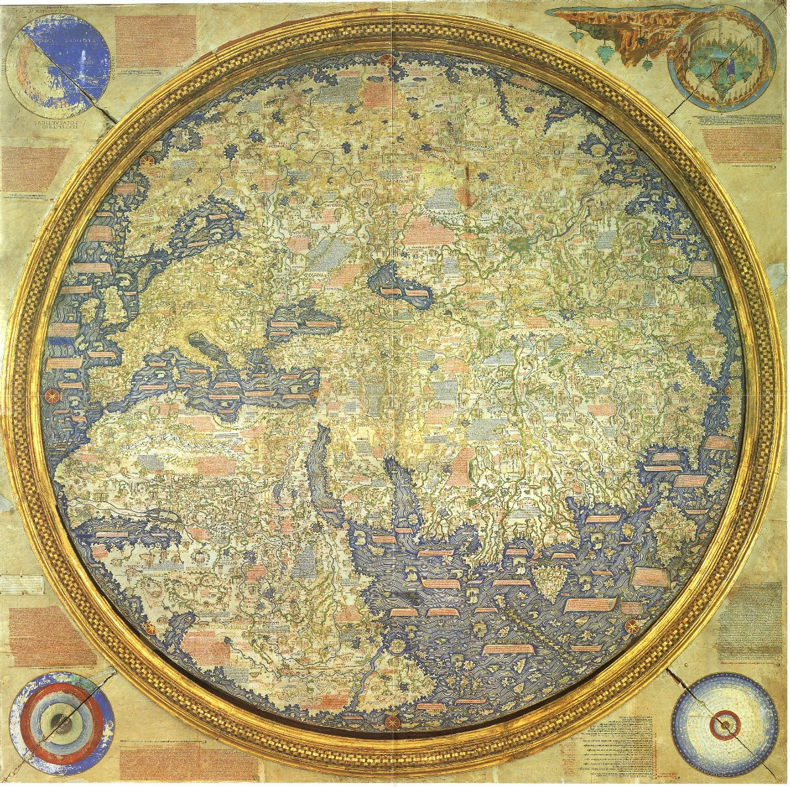
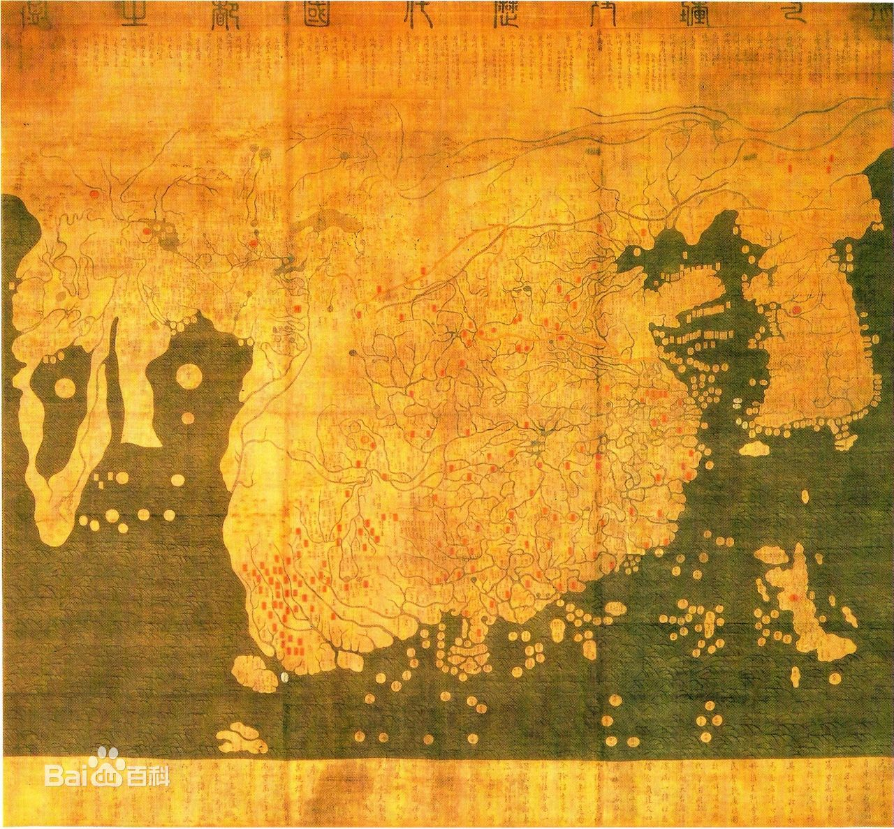
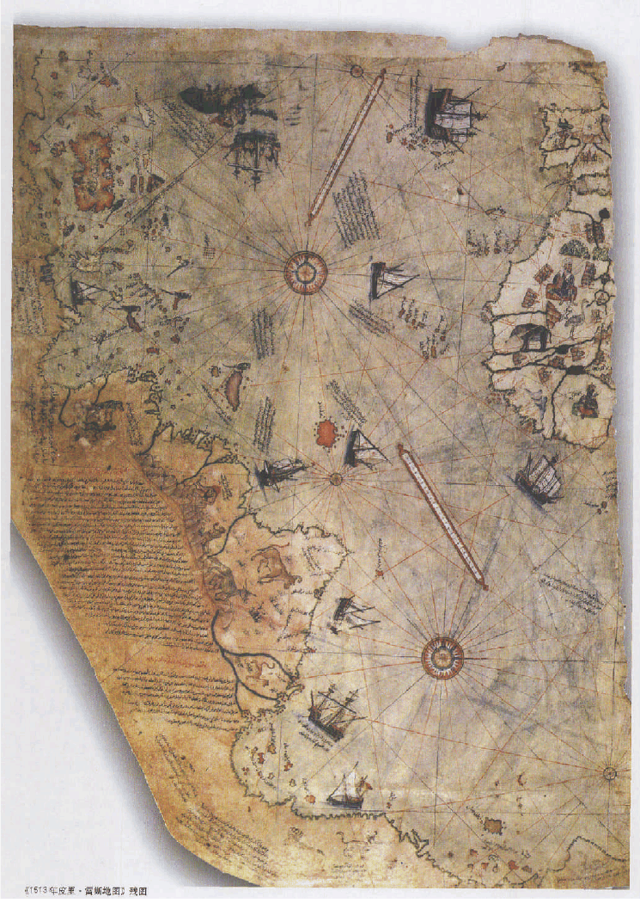
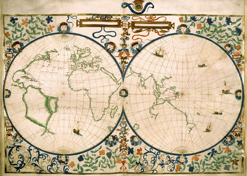
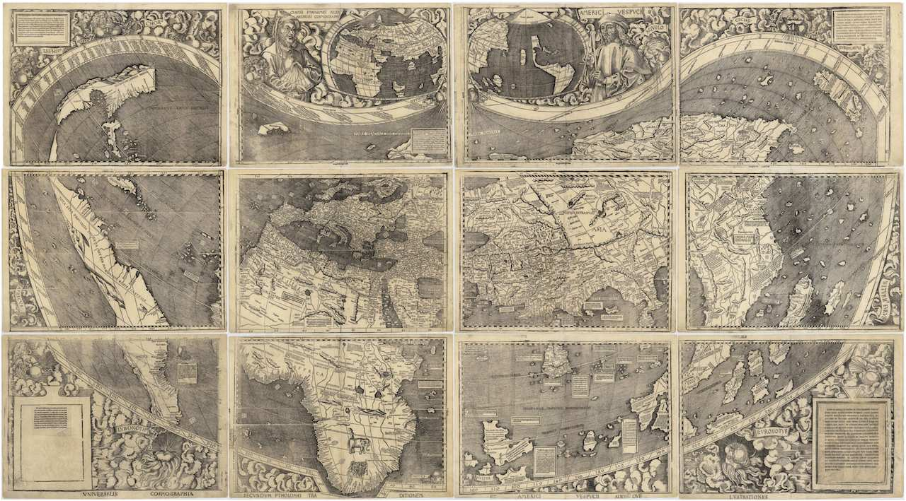
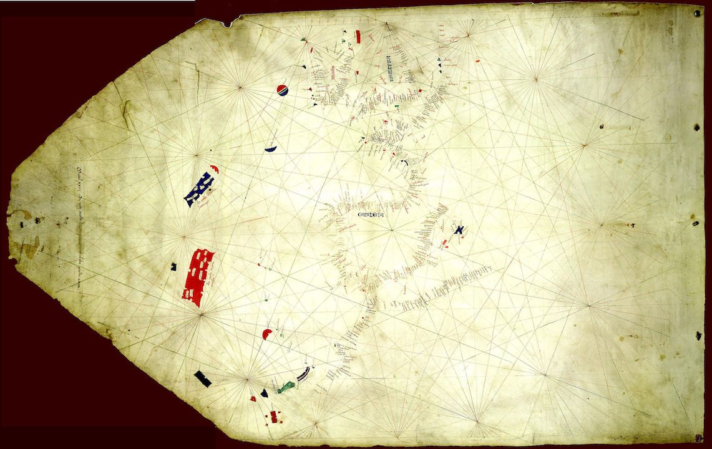
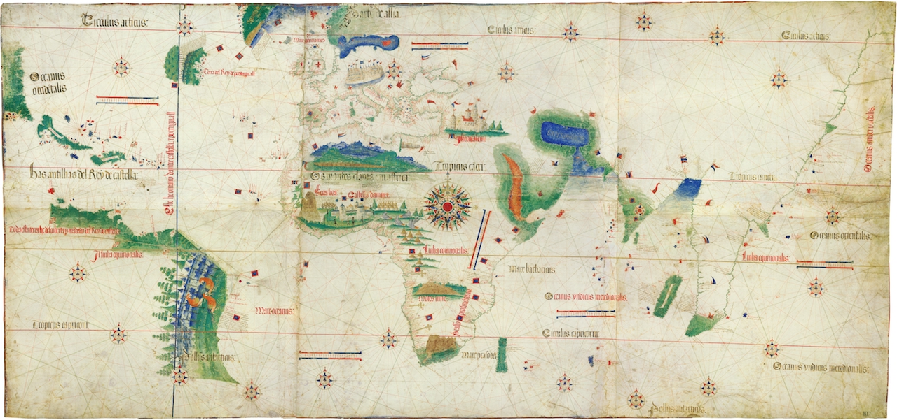
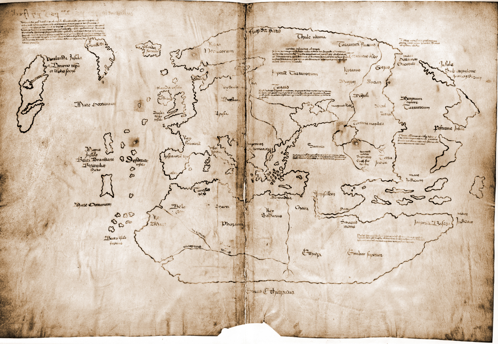

从海图中所读到的历史–《1421年中国发现世界》读后总结
1421 The Year China Discovered The World
– Gavin Menzies
写在前面
郑和下西洋是我们国家古代航海最灿烂的一页。其规模、成就都是中国古代航海史上空前绝后的。自永乐三年始（1405），至宣德八年（1433）郑和去世，前后共计28年，七下西洋，“大小凡三十余国，涉沧溟十万余里”，其成就不可谓不壮丽。可惜的是，当时的统治者并没有预知未来的能力。郑和死后，大明王朝的新皇以及士大夫阶层认为下西洋这件事劳民伤财，我们国家与海洋终于渐行渐远。几十年后，欧洲地理大发现开始，也就是大航海时代正式拉开序幕。以葡萄牙绕过好望角开辟通往印度洋的航路开始，西班牙后续向西越过大西洋发现了新大陆。之后英国后来居上，打败无敌舰队，殖民地遍及全球，成为“日不落帝国”。再之后就进入了一战、二战，老牌欧洲资本主义国家首当其冲，陷入落后的局面。社会主义苏联和资本主义新兴强国美国开始全球争霸。至20世纪末苏联解体冷战结束，美国一家独大而至于今。
以上这些是当今的通常看法，而很显然，在今天这篇总结里只是个引子。孟席斯的这本书仍然不具备能改变这些正统历史看法的能力，因为其中引用的证据有很多都不能决定性的一锤定音。但他仍然具有存在意义的逻辑基础就是：在欧洲人开始发现全世界之前，已经有多张地图将欧洲人未探知的地域描绘出来了。而假如排除一些更不靠谱的古文明，例如古埃及以及亚特兰蒂斯等的干扰，以及外星人这种更更不靠谱的推论，那么以理性的眼光来看，在那之前唯一有国力做到这件事的只有我天朝而已。而孟席斯作为原英国皇家海军军官，在行的正是阅读海图，这也正是这本书有价值的地方。虽然他本身并不是科班出身，但是这本书是在他访问了120多个国家，参观了900多个博物馆、图书馆和档案馆的基础上做出来的。即使这本书在以后的学者们探索下被证明是谬误的，但其为探寻真理所作出的贡献仍然不可磨灭。
中国人的壮举
起航
“永乐十九年正月初一（公元1421年2月2日）……至少有28个国家的首领在场，但不包括神圣罗马帝国的皇帝、拜占庭皇帝、威尼斯总督以及英王、法王、西班牙王和葡萄牙王。他们没有被邀请是因为这些国家落后，且缺乏贸易的货物或任何有价值的科学知识以供交流而被排在中国皇帝优先考虑的范围之外。”
“永乐二年十一月（公元1404年12月），朱棣任命两个长期顾问姚广孝和郑赐带着2180名学者着手编纂《永乐大典》以保存所有已知的文献和知识。这是到那时为止最大的一项学术工程。这部四千卷、计约五千万字的大百科全书刚好在紫禁城落成典礼之前编完。 ……除了这些丰富的学术知识外，好几百种的版印小说也可以在北京的书籍市场买到。在世界其他地方找不到哪怕一点点与之相比的东西。那时候，欧洲人还不知道印刷术–古登堡印出他的《圣经》是三十年之后的事，而且虽然欧洲此时处在文化和科学知识即将转型的文艺复兴前夜，它依旧大大落后于中国。*亨利五世（公元1387-1422年）的图书馆里有6本手抄书，其中有3本是从女修道院借的，同一时期欧洲最富有的商人佛罗伦萨人弗朗西斯科·达梯尼拥有12本书，其中8本是有关宗教方面的。”*
“中国人和欧洲人在航海方面的发现，其差距是巨大的。西班牙人和葡萄牙人惟一的兴趣就是收集食物、黄金和香料，以及怎样抵御原住民的进攻。伟大的中国船队肩负着科学探索的责任，而欧洲人在深度和广度上都难以望其项背，直到3个半世纪后在库克船长（Captain Cook）的航行中才做到这一点。”
“每艘船本身的巨大规模（更不必说舰队了）只有和同时期的其他海军比较才可以想象。在永乐十九年（公元1421年），世界上第二大舰队是威尼斯的。它大概由三百来艘大划船组成—这些划船快速、轻便、壁薄，是由软木建造的，它们用桨来划并且只适于在平静的夏日的地中海越岛作战。最大的威尼斯划船大约长150英尺、宽20英尺，最多只能装50吨的货物。相比之下，朱棣的宝船是航行在海上的柚木制成的庞然大物。这些大船的方向舵有一个有11公尺高–差不多是后来哥伦布发现新大陆时候的旗舰尼娜号的全长。每艘宝船可携带两千多吨的货物，它们可在5个星期内到达马六甲、12个星期内到达波斯湾的霍尔木兹海峡。它们能够航行于世界上最大的海洋，每次航行都可以持续数年。中国人在航海中损失的大量船只所能证明的不是它们建构不结实，相反是说明了它们所航行的水域多么危险、多么不可知，从北至南它们航过了多岩的海岸、锋利的珊瑚礁和冰川密布的海洋。保护威尼斯大划船的是弓箭手；而中国的船却装备着火药武器、铜铁大炮、曲射炮、火箭以及向敌人发射火焰的炮弹。中国的船在每一个方面—结构、装载能力、损害控制能力、军事装备、最大行程、联络、在从没有人到过的海洋航行的能力以及连续好几个月在海上维修和保养他们船只的能力–都领先欧洲好几个世纪。郑和将军可以不费吹灰之力摧毁驶过他身边的任何船队。就算当时世界上其他所有海军共同和这支中国船队开战也不过像是一队鲱鱼碰到了鲨鱼群。”
前面这几段话说明了一个道理，就是在1405年郑和下西洋开始一直到结束的30年间，在全世界范围内，如果有人能探索这个未知的世界，有能力、有志向做到这一点的只有大明朝。中国在文化、经济、科技方面的能力是当时世界无可比拟的。
而作者认为，除去郑和的主船队最远到达非洲东海岸，执行皇帝的主要政治任务之外，其他分船队的活动才是这只舰队达到前无古人成就的功臣，而时间大概在永乐十九年至二十一年（1421-1423），所谓“失踪的两年”。
“我发现的大量的证据表明：由郑和、周满、洪保、周闻和杨庆率领的中国船队在第六次史诗般的航行中到达过世界上的每一块大陆。他们穿行过62个列岛，共17000个岛屿，并且绘制了几万里的海岸图。…中国的船队穿过印度洋来到东非，接着向下绕过好望角来到佛得角群岛，通过了加勒比海到南极和北极，接着向下绕过合恩角、南极、澳大利亚、新西兰，跨越太平洋。”
“匹兹加诺、让·罗茨和坎提诺的航海图描绘了整个南半球，包括数千万平方公里的海域，数千个岛屿，以及从南极地区到赤道的几万英里的海岸线。他们所展现的陆地只能被早于欧洲航海大发现、到达南半球的船队所看到，而这只能是中国人。”
“中国的船队绘制了世界地图。它们可以通过月食测量地球的经度。通过比较地图，它们可以解决任何经度差异，并且完成了我们所知道的第一幅世界地图。但是，这花费了很大的代价。只有四艘洪保的船和一艘周满的船返回中国，仅在这两支船队中舰队就损失了50艘船。人员伤亡也巨大：周满舰队的9000人中，只有900人在1423年的10月随他们的海军归来。一共有3/4以上的人死在途中或是被抛弃在散布在全球的定居点。”
绕过好望角
证据：
- 弗拉·毛罗（Fra Mauro）地图，它由制图师弗拉·毛罗绘制于1459年，收藏于威尼斯。它是自罗马帝国时代以来绘制的有关整个世界的第一幅地图，早于第一个绕过好望角的欧洲人巴尔托洛梅乌·迪亚斯（1488年）30年。关于非洲沿岸地形的信息可能来源于达·康提–他曾经改变信仰为伊斯兰教并且通过陆路到过古里（卡利亥特），并且可能见过郑和的舰队。如果这个推断是真的，那么船队应该绕过好望角到达过非洲西岸。
- 混一疆理历代国都之图，原图（1403）年由朝鲜大使呈现给朱棣，已丢失，翻版于1420年，现保存于日本龙谷大学。这张图上已经精确的绘制出了非洲的东、南、西海岸；欧洲人60年后才到达南部非洲，阿拉伯航海家从未到达过摩洛哥以南，蒙古人也从未到达过非洲–因而这肯定是绕过好望角的人绘制的。非洲西海岸的突起部分未被绘制正确可能是由于洋流的推动而使绘图师绘制错误。
- 皮里·雷斯（Piri Reis）地图（1513）。关于1428年地图（已遗失）的一些描述表明了其上已经绘制了好望角以及麦哲伦海峡，它后来被合入了另一张地图–皮里·雷斯地图（1513）中，保存于伊斯坦布尔，比麦哲伦发现麦哲伦海峡（1520）早。
毛罗地图上的题记：“大约1420年左右，从印度方向来的一艘船或是舢板毫不停留地径直横越印度洋航过“男人和女人岛”（the Isles of Men and Women）驶过德迪亚卜角（Cap de Diab）〔好望角Cape of Good Hope〕穿过佛得岛（the Isole Verde）和无名群岛（obscured islands）〔或可称为未知地带〕向西航行，转向西南方向又航行了40天后，除了一望无际的天空和茫茫的汪洋之外什么也没有发现。据他们估计，他们已航行了2000英里，命运之神抛弃了他们。在70天内他们又返回到所谓的“德迪亚卜角”（Cap de Diab）。”作者在佛得角群岛上以及非洲西海岸都找到了由克拉拉邦（首都古里）语言雕刻文字的石碑，这证明了从印度方向真的来过船。而由于没有任何证据显示印度人绕过好望角，而疆理图上却表明中国人已经知道了好望角以及西海岸的海岸线，因而更可能的结果就是中国人绕过了好望角。
弗拉·毛罗地图 ：原图上南下北，此图已做反转，可以看到好望角以东、印度洋、中国海岸线的存在。

混一疆理历代国都之图（龙谷版）， 可以看到当时对于非洲海岸的描述，以及未被正确绘制的几内亚湾（以及巨大的朝鲜和缩小的日本^_^）：

皮里·雷斯地图， 左侧的陆地为南北美洲，下方陆地为南极洲，右侧陆地为非洲西岸以及好望角。

根据洋流，船队到达了美洲海域，周闻驶向北美，洪宝、周满驶向南美。
新世界
证据：
- 美洲的鸡与亚洲及类似，而不是欧洲鸡。
- 永乐二十一年菲律宾西南的沉船里面发现了南美洲特有的用来磨玉米的工具。
当然，另外的证据来自皮里·雷斯地图，但都只能证明第一个发现此地的不是欧洲人，但并不能表明一定是中国人发现的。
南极洲与澳洲
洪保舰队第一个穿越麦哲伦海峡并发现南极洲，向东横穿大西洋、印度洋到达澳大利亚西侧。
证据：
- 皮里·雷斯地图
- 让·罗茨（Jean Rotz）地图（1542），比库克船长发现澳大利亚早两个世纪。上面绘制了澳大利亚北部、苏门答腊、马来半岛、印度支那和婆罗洲的西海岸。
- 一艘船的遗骸的船木以及其他一些传说。
让·罗茨地图， 可以看到右侧部分所绘制的印度洋、东南亚、以及下方澳洲的北部。

澳大利亚
周满沿南美洲西海岸向北行驶至厄瓜多尔，并向西穿越太平洋到达澳大利亚东海岸。
证据：
- 1965年在新南威尔士州北部拜伦海湾发现极大地木质舵。
- 悉尼南部海岸发现古代船只残骸。
- 帕斯附件发现两艘残骸。
- 伍伦贡的阿勒达拉发现中国古代石雕女神头像。
- 尼平河底发现还愿供奉物品。
- 瓦南布尔发现桃心花木船。
- 其他欧洲早期探险者的叙述。
- 鲁阿普基石刻同之前发现的印度海岸的柯枝、佛得角群岛的简尼拉、刚果河三角洲的马塔迪瀑布的石刻相似，都位于汲水初，能俯视大海并且都刻着同心圆。香港黄竹坑、长洲和蒲台也发现类似的记号。
- 鲁阿普基沉船可能是跟着中国人舰队一起航行的泰米尔人的船的残骸。
- 其他传说。
大堡礁和香料群岛
周满
证据：
- 让·罗茨地图并不是唯一一张澳大利亚地图。多芬地图（1536）以及德利安海图（1551）和德塞利耶海图（1553）都绘制出了。
- 其他关于东南亚中国瓷器、铜钱使用的记录。
美洲
周满的分舰队
顺海流和季风到达北美洲太平洋沿岸。
证据：
- 1507年瓦尔德塞米勒世界地图（Martin Waldseemüller），太平洋海岸惊人的准确，从北方今天加拿大的温哥华岛（Vancouver Island）到南边的厄瓜多尔，一路的纬度都很准确。这完全符合一位绘图员坐在一艘沿太平洋海岸航行的船上，但没有画出海岸的更多细节。
- 加利福尼亚萨卡拉门托河岸40英尺厚的沉沙、淤泥下，地磁仪勘测出一个被掩埋的物体，长85英尺，宽30英尺，形状与陪同郑和舰队的贸易船只非常相似。挖出的木头碎块经碳测定为永乐八年（1410）左右；之后又发现了其运载的种子，其中包含中国特有的种子；发现了15世纪美洲所没有的大米。
- 1874年加利福尼亚官方调查员史蒂芬·鲍尔斯声称离萨卡拉门托船西北约一百多公里的地方有中国居留民的语言证据，但欧洲移民带来的疾病已经杀死了当地中国居留民和其他印度人。但此观点不被当局接受。
- 植物证据–原产于中美洲的植物，在大航海之前已经在世界各地传播了。复活节岛上发现红薯、西红柿和木瓜；夏威夷有红薯，中国、菲律宾都有玉米。
瓦尔德塞米勒世界地图， 可以看到美洲的太平洋沿岸：

中美洲
周满的分舰队，部分船只或者私人商船被留下来建立聚居区
证据：
- 墨西哥和中国的漆制品在流程、技术、颜料上都很相似。“在许多地区，都可能出现了运用这些物质作为染料的步骤，将它们染于织物的措施如此之复杂，要说这儿是独立发展起来的，那看起来是不可思议的，更不用说是多次出现这样的情况……因此，当我们发现在不同的地区使用同样几种染料和媒染剂时，我们必须考虑到历史联系的可能性，甚至更进一步，特别是根据其他的零零碎碎的相同之处，这样的接触应该不但应该重复多次，而且非常紧密。”
- 中国的仪式小刀和中美的金属斧
- 镜子文化
- 尤卡坦亚麻布（19世纪），时代在西班牙到达墨西哥之前很久。
- 李约瑟教授：“在我停留期间，对于高等的中美洲文明的许多特征和亚洲东部和西南部的文明特征之间的明显的相似，我印象非常深刻。”
- 其他玛雅遗迹证据
- 生物学家卡尔·约翰尼桑、M·福格描述，危地马拉当地居民使用乌骨鸡来实施预言和魔法，“说明不仅母鸡来自中国，而且中国人必定在此停留相当长的时间来教化这一地区的多批居民”。
- 图里奥·阿兰茨和M·L·加兰告博士报告称居住在派里哈山脉（Sierra de Perija）山脚下的伊拉帕人（Irapa）、帕劳哈诺人（Paraujano）、马奎塔人（Macoita）的铁传递蛋白进行比较，这些部落是处于灭绝边缘的原始居民。科学家们发现这些民族中的58%的人身上存在着一种移动缓慢的铁传递蛋白，到现在为止，它仅仅发现存在于居住在中国东南部的广东省的中国人身上。“这一发现是在南美印地安人和中国人之间存在种族联系的附加证据。”
- 语言学上的证据。
- “我发现有一千多本书提供了众多的证据，说在哥伦布之前中国人航行到了美洲，这类著作甚至已经被总结成一个两卷的书目。”
加勒比
周闻沿赤道洋流的北支向西北航行至加勒比海。
证据：
- 匹兹加诺(Zuane Pizzigano)海图（1424），它绘制了欧洲的海岸线，并且绘制出了西大西洋深处的四个岛屿。“这些火山在以后的250年再没有爆发过，加勒比海其他火山在整个15世纪也没有爆发。因为匹兹加诺航海图只能记录了南部瓜德鲁普岛上火山的一次爆发，我就掌握了第一手的证据证明，在哥伦布到来的68年以前，至迟不晚于永乐二十二年（公元1424年）有一个地图学家就曾经来到过加勒比海地区。” “制图师的水平惊人，超过了葡萄牙人在1424年可能达到的程度”
- 坎提诺(Cantino)航海图（1502）。“但是尽管此图在描绘非洲海岸和印度洋及其群岛时反映出非凡的准确性，但一眼即可看出它在描绘加勒比海域时所表现的缺憾。很多岛屿与实际的尺寸和形状似乎没有什么关联。我对于图中为什么会有如此之多的错误而困惑。…1421年的海平面是要比现在低的。全球气候变暖使极地冰层融化，缓慢而无情地抬升着海平面。…当我调整现代的航海图以表现海平面以下180公分的等深线时，加勒比海群岛之间很多浅的礁湖都变成了干的陆地，而当我将调整后的海图叠加到坎提诺图上的时候，很明显，加勒比海的准确绘制令人难以置信。就如同它在6个世纪之前出现在所经过的水手前时一模一样。”“为了使坎提诺航海图和皮瑞·雷斯航海图达到显著的准确性和丰富的细节，只是为考察印度洋便至少要求30条船，更不用说南美洲、南极洲和非洲了。无论是葡萄牙人还是西班牙人都不可能派遣如此众多而庞大的舰队同时去世界不同的部分。只有中国有这么多的船只、资源和专业技术去做这样的事情。中国宝船上的制图师应该就是这些非凡航海图的原创者。”
匹兹加诺海图， 可以看出英吉利海峡、伊比利亚半岛、直布罗陀海峡等欧洲西海岸地标。但我不知道作者提到的四个岛屿具体指哪里，应该是最左侧的那一块吧。

坎提诺海图， 可以看到美洲东海岸，非洲海岸、印度洋：

北美洲
周闻
证据：
- “著名的威尼斯探险家乔瓦尼·德·韦拉扎诺（Giovanni de Verrazzano，公元 1480～1527年）在1524年曾到达那一海岸，而坎提诺地图已经出版22年了。法国国王弗朗西斯一世（Francis I）曾雇佣他探寻北美海岸。其目的就是寻找到达太平洋和香料岛—“中国幸福海岸”（The happy shores of Cathay）的海路。韦拉扎诺（Verrazzano）的航海与西班牙派麦哲伦对南美的航行和葡萄牙派探险队对好望角进行的一系列探险差不多是同时。”据他记载，当地人“既不是北美洲土著文明也不是欧洲文明”，“这些记述确实和叙利亚或埃及的妇女相符，也如同中国的妇女。所有这些妇女均穿长袍、戴珠宝，而且梳理乌黑的头发。但埃及、叙利亚海员曾到达过大西洋。不管怎么说，这些地区的妇女不可能远航如此远的地方。这一记录印证了中国侍妾与中东统治者及使臣婚配所生后裔的事实。”
- 多处石刻
北极
周闻
证据：
- “中韩绘制的《疆理图》上就出现了亚述尔群岛，而阿拉伯的地图上，甚至是最著名的历史学家阿尔·伊迪利司（Al Idrisi，公元1099～1166年）和阿本·哈顿（Ibn Khaldun，公元1332～1406年）的地图上都没有发现该岛。如果它不是中国人发现的，那么谁会在葡萄牙人之前发现该岛，而那些葡萄牙人又是怎样知道遥远中国的制图法的呢”
- 文兰海图(Vinland Map)（1420~1440），可靠性遭质疑。
- 中国明史专家李约瑟（Needham）教授说格陵兰、冰岛分散地存在着超过20处的有关中国人的记录，这些表明了他们的确到过北极。
文兰海图， 可以看到冰岛、格陵兰岛：

其他知识
- 郑和遇到过圣·艾尔摩之火–雷暴天气尖锐物体上可能出现的一种发光现象，比如桅杆上：“溟渤之间,或遇风涛,即有神灯烛于帆樯,灵光一临,则变险为夷,虽在颠连,亦保无虞。–长乐碑文”。
- 古时西方称中国为“Cathay”，马可波罗的影响。Cathaya（契丹）。
- 早在战国时期，古人就有了地球是圆的这个学说，即浑天说；其对立学说为盖天说，即“天圆地方”。到了唐代，经过一代代天文学家的努力，基本已经确认了浑天说。代表人物有张衡，及其《浑仪注》。浑天仪以及浑象是此种学说的延伸。
- 好望角 – Cape of Good Hope；开普敦 – Cape Town，也许叫“海角城”更贴切。
- 巴西 – Brazil，葡萄牙人主要从此处获取巴西红木（Brasil），由此得名。
- 哥伦布留给后世真正遗产并不是关于美洲的发现，而是大西洋的季风系统。这是哥伦布在他后来的几次航海过程中，通过卓越的分析和探索得出的。
总结及读后感
这是一本看起来有些荒诞的书，因为它与世界上的主流历史有着太大的差异。我想其中的一部分应该是有道理的，至少好望角、澳大利亚那一部分我觉得还是很有意思的。而即使其中包含着真理，就像作者自己说的：“但是一个退役的皇家海军潜艇艇长将成为开始这一进程的人，这看起来似乎过于冒昧了。虽然我对我已经收集的证据的真实性具有信心，但是想到学术圈中可能会出现的反应我就会在夜里噩梦连连。我断定，从学术界去寻找确定的证据势在必行，因为，虽然迄今为止他们一直在慷慨地帮助我，但我可以想象一些著名的历史教授对一个他们用一生的心血去研究和教学的课题从根本上进行重新解释的反应。…可能那些学者不知道这个证据；可能他们选择忽略它，大概因为它与那些已经被接受的知识相矛盾，而有相当多的职业以那些知识为基础。”但是，“具有相当开阔思维的学者们将会再次审视这一史实”。
记得听过一句话：“历史学是一门当代决定古代的学科”。比如在挖出秦始皇陵兵马俑之前，谁会想到2000年前的秦国有这么强的制造工艺？碳测定技术出现之后，有多少记录都可以重新确定了？而我想如果今天从美洲的海底发现了一些宝船的残骸就能改变很多历史学的认识。我想真理总是会显现，早晚而已。孟席斯提出的很多证据，特别是这些海图的存在，都是当今的主流历史所不能解释的，而这总是需要解决的。即使他的结论仍然不一定对，但这种尝试是可贵的。
感谢孟席斯的理论以及他对于所付出的巨大劳动，让我们向着真理又前进了一步。